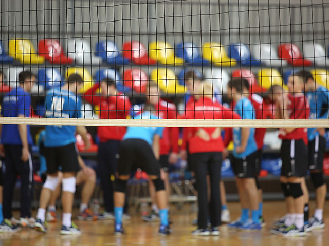
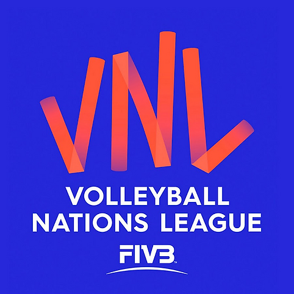
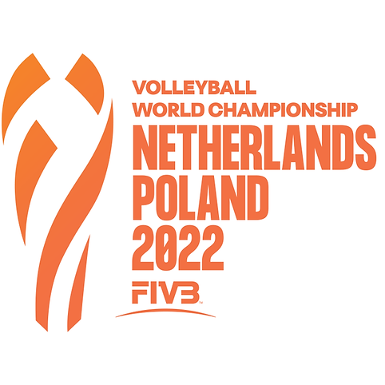

SIATKÓWKA
POLSKA

Liga Narodów 2024
22 maj 2024, 19:00 - 26 maj 2024, 23:00
Antalya | Turcja
Kiedy i o której mecze Polaków?

Mistrzostwa Świata
30 sie 2022, 19:00 - 11 wrz 2022, 23:00
Warszawa | Polska
Kto zdobędzie szczyt?
SIATKÓWKA
"Polska Siatkówka: Wszystko o Drużynach"
Witamy na naszej stronie poświęconej polskim drużynom siatkarskim! Znajdziesz tu najnowsze informacje o składach drużyn, historii, wynikach meczów, a także ekskluzywne wywiady i analizy. Śledź losy swoich ulubionych drużyn i bądź na bieżąco z wydarzeniami w świecie polskiej siatkówki!
"Siatkówka to gra zespołowa, w której sukces zależy od współpracy, a nie od indywidualnych umiejętności."
HISTORIA
Śiatkówka w Polsce
Siatkówka pojawiła się w Polsce po I wojnie światowej, wprowadzona przez YMCA i wojsko. W 1928 roku powstał Polski Związek Piłki Siatkowej. Największy sukces przyszedł w latach 70., kiedy Polska zdobyła Mistrzostwo Świata i złoty medal olimpijski. Od tego czasu sport ten jest bardzo popularny, a Polska Liga Siatkarska jest jedną z najsilniejszych w Europie.